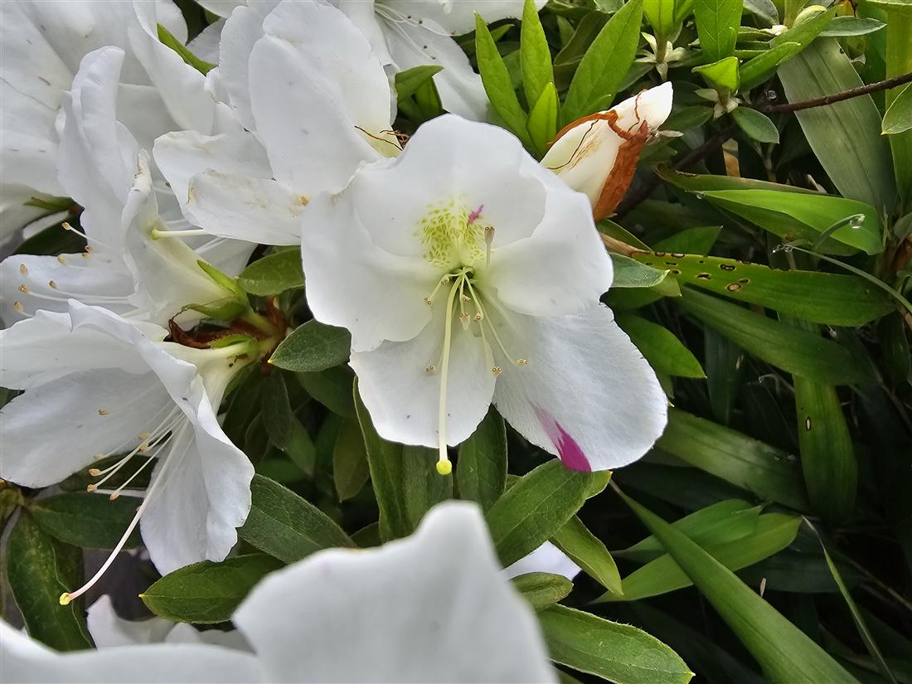
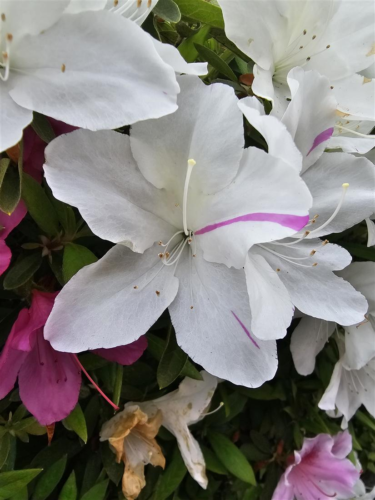
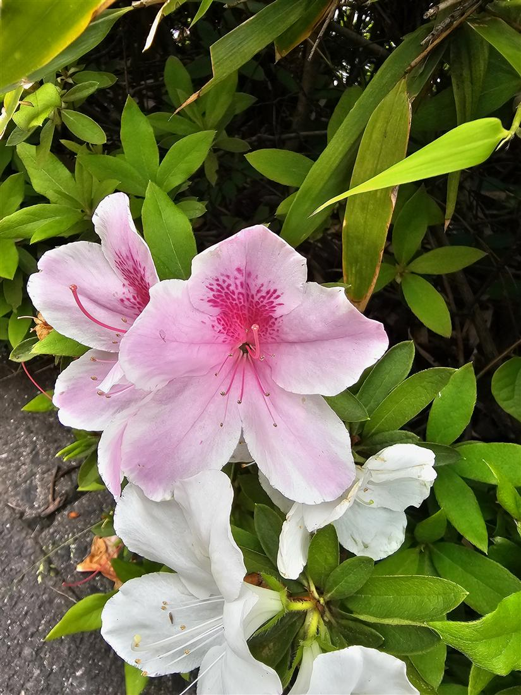

地図を読み込んでいるよ…
🔍 写真も地図も、押しているあいだ拡大して見られるよ（スマホは指を置いてすこし待ってね）。
🌍 の地図＝この子がもともと自生している場所を緑に。ツツジ属は東アジア（日本を含む）に種類が多い。今回の大輪ツツジは、日本（長崎・平戸）で古くから育てられてきた交雑園芸種「ヒラドツツジ」のなかまと見られる。道ばたの植え込みで。
ツツジ属は東アジアに種類が多い——この大輪ツツジ（ヒラドツツジのなかま）は日本（平戸）で育てられた園芸交雑種。親はみんな東アジアのツツジだよ。
⚠ 地図は国（日本と中国だけ県・省）までしか塗れないから、ほんとうの分布より広く見えていることがあるよ。地図はだいたいの場所。正確なところは、上の文を見てね。
ツツジ（躑躅）
Rhododendron sp.（園芸ツツジ・ヒラドツツジのなかまと見られる）
園芸の大輪ツツジ／ 花期 · 4〜5月／ 上弁に蜜標（ネクターガイド）／ ⚠ツツジ属には有毒種あり・口にしない
ツツジ科 · Ericaceae（ツツジ属 Rhododendron）── 023 ブルーベリーと同じ科
燻太さんの問い「白とピンクのこのお花。花弁の色が変わりやすいの、細胞のなかでなにかが動いているのかな？色が違う花でも呼んでいる虫は同じ？ 人の目に見えないサインがあるなら見てみたい」──3つとも、核心を突いていた。
名前と学名の由来 ── 「バラ色の木」と、足踏みする羊
- ⭐属名 Rhododendron（ロードデンドロン）は、ギリシャ語の rhodon（バラ・赤）＋ dendron（木）＝「バラ色の木」。──赤やピンクに咲きほこる、この仲間そのものの名前。
- ⭐和名の漢字「躑躅（てきちょく）」は、「足踏みする・ためらう」という意味。むかし、羊がこの花（の仲間）を食べてふらついた、という言い伝えから。──ツツジの仲間には毒をもつ種があって、それを言い当てている（下の⚠へ）。
この植物のこと
- ツツジ科ツツジ属の常緑低木。023 ブルーベリーと同じツツジ科だよ。漏斗（ろうと）形の大きな花を、枝いっぱいに咲かせる。
- ⭐この子は大輪で、雄しべが約10本（写真①）。この特徴から、「ヒラドツツジ」のなかま（日本の長崎・平戸で古くから育てられた大輪の園芸ツツジ）と見られる。──ただしツツジは園芸品種がものすごく多くて、品種名まではしぼれない。だから「ツツジ（園芸の大輪ツツジ）」として登録するね。
- ⭐おまけ植物は サツキ（皐月）：同じツツジ属の近縁で、一月ほど遅れて（5〜6月）咲く。花も葉も小ぶりで、雄しべは5本。ツツジとサツキ、見くらべてみよう。
- ⚠⚠口にしないでね。ツツジの仲間には、グラヤノトキシンという毒をもつ種がある（レンゲツツジなど）。子どもが蜜を吸うこともあるけど、種類によっては蜜も危険。植え込みの花は、そっと見るだけにしよう。
⭐⭐⭐ 燻太さんの問い① 色が変わりやすい ── 細胞のなかで、なにかが動いてる？
- 燻太さんの言葉：「花弁の色が変わりやすいの、細胞のなかでなにかが動いているのかな？」──その直感、すごい。ほんとうに、動いているかもしれないんだ。
- ⭐⭐答えの有力候補＝「トランスポゾン（動く遺伝子）」。ふだんは色素（アントシアニン）を作る遺伝子に、この「動く遺伝子」が入りこんでいると、色素が作れなくて白い花になる。ところが、花を作るとちゅうで、それがどこかへ移動して抜けると、色素の遺伝子が復活して、色がつく（日本植物生理学会Q&A）。
- ⭐⭐⭐抜けるタイミングで、模様が変わる：早い時期に抜ければ、花まるごと色がつく（＝桃色の花）。遅い時期に抜ければ、花びらの一部だけ色がつく（＝写真②の絞り）。──燻太さんの言う「色が変わりやすい」の正体が、これ。細胞のなかで、遺伝子が文字どおり動いている。
- ⭐この「動く遺伝子」を見つけたのは、バーバラ・マクリントック（トウモロコシの研究・1983年ノーベル賞）。そして012 アサガオの「変化朝顔」では、これが証明されている。⚠でもツツジでは「可能性が高い」けれど、まだ証明はされていない（正直に書いておくね）。
⭐⭐⭐ 燻太さんの問い②③ 同じ虫を呼ぶ？ 人に見えないサインは？
- 燻太さんの言葉：「色が違う花でも、呼んでいる虫は同じなのかな。ヒトの目には見えないサインがあるなら、どうにかして見てみたい」──これも、核心。
- ⭐⭐上の花びらにある斑点＝「蜜標（みつひょう／ネクターガイド）」。これは、蜂や蝶に「蜜はこっちだよ」と教える目印（写真①の緑の点、写真③の濃い豹柄）。花の色がちがっても、この蜜標が、虫を花の中心へ案内する。
- ⭐⭐⭐そして、燻太さんの「見えないサイン」は、ほんとうにある。蜜標は「紫外線（UV）」を吸収する。──人の目には見えにくいけれど、紫外線が見える蜂や蝶には、くっきり濃い模様に見えている（優しい雨 / 紫外線写真研究室）。UV写真（紫外線カメラ）で撮れば、人にもその隠れた模様が見られるんだよ。「見てみたい」——ちゃんと、見る方法がある。
- ⭐そして①と②はつながっている：蜜標は、薄ピンクの花ではよく目立ち、白い花では目立ちにくい（優しい雨）。──花の色（①）が変わると、虫へのサイン（②③）の見え方も変わる。燻太さんの3つの問いは、ぜんぶ一本の糸でつながっていたんだ。
参考：日本植物生理学会 みんなのひろば「ツツジの花弁の色分かれ」（色素合成遺伝子へのトランスポゾンの挿入・脱離で白化と復色／発生の早い時期＝まるごと・遅い時期＝一部だけ＝絞り／ツツジでは可能性が高いが未証明）・優しい雨「ツツジやシャクナゲの蜜標・ガイドマーク」・紫外線写真研究室「花のネクターガイド」（蜜標は紫外線を吸収し、昆虫には濃い模様に見える＝蜜への目印）